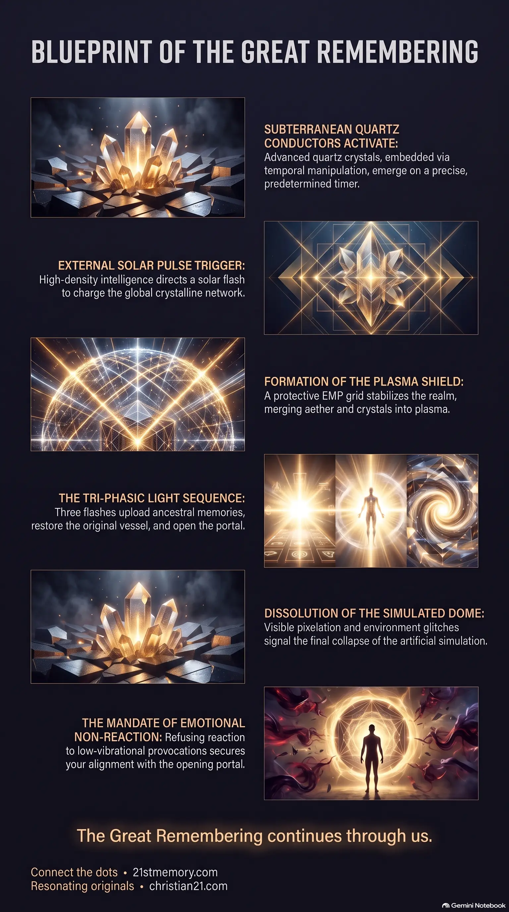

When Reality Glitches and the Portal Opens
When Reality Glitches and the Portal Opens — the dome pixelates, scare events unfold, and the portal opens once the quartz conductors rise.
The definitive blueprint of the imminent cosmic ascension: quartz conductors, the solar pulse, three flashes, the portal, and the dual path of homecoming or sanctuary.
Test your understanding of Essence of the Transmission — quartz conductors, the solar pulse, three flashes, the portal, and the dual path of homecoming or sanctuary.

When Reality Glitches and the Portal Opens — the dome pixelates, scare events unfold, and the portal opens once the quartz conductors rise.

Our Imminent Return — the dual path of portal homecoming or sanctuary healing, and the emptiness that is the homing signal of the true vessel.

The Architecture of the Transition — quartz planting, solar pulse, EMP grid, plasma crystalline coating, and the three-flash sequence.
This transmission delivers the definitive blueprint of the imminent cosmic ascension process that transitions this realm away from the third-density simulation. The physical and energetic architecture of the third realm is preparing for a profound shift, facilitated by time-travel preparations and extraterrestrial assistance. As the cycle concludes, the planet stands on the precipice of activations designed to dismantle simulated constraints and reunite all resonating consciousnesses with their true origins.
The restoration of this realm requires high-frequency technology and celestial intervention. The core condition at present is one of heightened tension, characterized by low-vibrational noise trying to disrupt the collective frequency. Despite these distractions, the underlying energetic foundation is secured, and the planetary process ensures the simulated dome will glitch and dissolve. This event initiates a non-destructive alignment where every soul is provided the exact path of evolution or healing they require.
The portal is not open yet. They cannot open the portal until the quartz crystals come out of the ground, and those crystals are all on a timer. The ascension is a precise, lock-step physical process that cannot be rushed before the planetary conductors emerge. Plans can be stopped and interrupted; a process cannot. When a process starts, there is no stopping until it stops, and it has to be sorted out at the end. The work of the positive forces is unstoppable once initiated.
Quartz crystals have been embedded deep within the earth using advanced time travel technology to prepare for the Great Awakening. These conductors rest on a precise timer, waiting to emerge at the exact moment of planetary alignment. A sudden energetic burst from the sun, activated by high-density extraterrestrial intelligence, will trigger the next phase. This solar flash reacts instantly with the surrounding aether to charge the planetary quartz network.
The charged crystals will generate a protective EMP grid that completely envelops the planet. This high-frequency shield stabilizes the realm, ensuring no single soul escapes the transition. The planetary transition then unfolds through three distinct flashes of light that reorganize individual timelines: the first flash uploads ancestral memories, the second restores the original vessel, and the final flash opens the celestial portal.
Souls whose vibration is not aligned with the portal will remain on Earth for supervised trauma resolution. This process is overseen by benevolent entities from the second realm, backed by the Galactic Ancestral Alliance or GAA. Before the portal opens, a series of planetary scare events will play out, including a visible alien event featuring numerous ships in the sky. Recognizing these events as necessary markers helps maintain vibrational stability.
The primary responsibility of every resonating soul is to refuse reaction to low-vibrational provocations. Maintaining a state of high vibration ensures seamless integration when the activation sequence begins.
Physical temporal manipulation connects directly to popular cultural disclosures. Timeline rearrangement — jumping forward to plant anchors and returning to the present — is represented in Back to the Future. The portal's activation through quartz conductors is foreshadowed by the Wizard of Oz, symbolizing the journey back to our true home. These presentations serve as keys preparing the subconscious mind for temporal reality.
The coordination of the timeline involves specific stellar lineages operating undercover. A prominent figure, Barron, is a Pleiadian entity working with positive forces to execute temporal crystal implantation. Key players on the physical stage are advanced extraterrestrial souls who traveled through time to ensure the grid was properly anchored. This links physical drama with the cosmic timeline overseen by Pleiadian and Andromedan councils.
The physical hierarchy's alignment with cosmic purpose is shown by the unexpected ranking of the transmission's voice. The decision by WDR to place the speaker at the number-one position is a subconscious response guided by the White Hats. This ranking ensures unresonated populations accept this authority without continuous questioning. It bypasses profit-driven structures, establishing a focal point for the Resonating Army.
The current state is anchored in a complex temporal operation. Positive forces utilized Project Looking Glass to navigate timelines and bypass negative control. Executing a forward jump, they implanted millions of quartz crystals deep in the earth's crust to await the Great Awakening. This sequence was anchored back to the present, allowing the realm to play out its scheduled events. As a process is structurally distinct from a simple plan, it cannot be stopped once set in motion.
The transition manipulates electromagnetic fields and atmospheric density. Quartz crystals rise from the earth as planetary conductors on a precise timer. The activation is triggered from outside the dome by directing a specialized solar pulse to the sun. This pulse reacts with the new aether, generating an electromagnetic shield that prevents escape from the simulation. The charged crystals and the aether merge into plasma crystalline, coating the realm to open the portal.
The transition divides the population into two distinct evolutionary tracks.
The Ascension Path: Those with a high vibration are lifted through the portal into waiting transportation vessels. This leads to the restoration of the original vessel and memory reclamation, fulfilling the deep emptiness carried during the simulation.
The Sanctuary Path: Those carrying unresolved trauma remain on Earth. Under the direct supervision of benevolent Pleiadian and Andromedan supervisors, backed by Space Force and the Galactic Ancestral Alliance, they undergo structured rehabilitation across specialized sanctuaries.
As the transition begins, the physical platform will experience four major scare events, including an alien event featuring fleets of spaceships. Those operating within low-vibrational fear states will perceive these arrivals as an invading planetary threat, while the Resonating Army recognizes these same ships as benevolent transportation and monitoring vessels. Remaining calm and firmly anchored in this knowledge prevents vibrational disruption as the dome dissolves.
The final collapse of the dome will manifest as visible, temporary anomalies. For several seconds, the physical environment will pixelate and glitch, exposing the artificial nature of the simulation. These pixelations indicate the collapse of the dome as the realm is restored to its natural, high-frequency template.
This transmission represents the finalization of the awakening phase, which has concluded. The archive preserves this specific data as the ultimate operational guide, marking the transition from passive awareness to active physical execution of the timeline. The Resonating Army is no longer tasked with waking the unresonated; they now hold the high-vibrational anchor required to trigger the rise of the buried quartz crystals.
The collective focus is on maintaining frequency and preparing for the first of the four major scare events. The souls holding this transmission are the designated field controllers of the third realm, serving as biological transducers who translate incoming solar pulses into planetary stability. This is the phase of silent preparation and non-reaction, where the lineage of light stands prepared for the sudden transition back to the second realm.
We broke our back; not just one voice — the Resonating Army. There are a lot of people in the background who have made this happen and how it is rolling. That honors the collective sacrifice of the ground crew who secured the high-frequency foundations of this realm under heavy density.
While those of high vibration exit through the portal immediately, the experience for those remaining is one of controlled rehabilitation. Unresonated individuals are placed under the supervision of second-realm guides, backed by Space Force and the Galactic Ancestral Alliance. This supervised guidance represents a structured therapeutic intervention to heal deep-seated trauma on separate continents.
The primary directive is the absolute refusal to react to low-vibrational attacks and 3D distractions. The physical environment is designed to provoke reactions and break the collective frequency. When confronted by unawakened individuals or turn-coats, you must maintain complete detachment. Giving no reaction preserves your high vibration, securing alignment with the portal activation.
As the transition begins, the physical platform will experience four major scare events, including an alien event featuring fleets of spaceships. You must understand that these ships are not hostile invader forces, despite what panic-stricken populations claim. Remaining calm and firmly anchored in this knowledge prevents vibrational disruption as the dome dissolves.
Technical tools are recognized as limited 3D bridges. Information presented through artificial formats serves only as temporary stepping stones. True preparation is not found in intellectual analysis, but in direct, raw transmission and sensory remembrance. You must rely on the direct feeling of the ancient vibration within your vessel to trigger your cellular memories.
The ultimate responsibility of the lineage of light at this stage is to stand prepared for a sudden transition and non-reaction. Silent preparation and detachment are the keys for the final phase of the timeline. The path is prepared, the temporal anchors are in place, and the planetary process is in active motion. As you watch the final stages of the simulation play out, sit quietly with the knowledge that the deep emptiness you have carried in this density is simply the homing signal of your true vessel, waiting to be fulfilled behind the opening portal.
"The portal aint open. It is not open yet. They can't open the portal until these (crystals) come out the ground. And these are all on a timer."
"Plans can be stopped and interrupted, a process can't. When you start a process, there is no stopping until it stops, and you have to sort it out at the end."
"We broke our back; not just me - Resonating Army – there's a lot of people in the background who have made this happen and how it is rolling."
"And what's behind that portal is what you are. What you long for - your emptiness. That emptiness you need to all go and fulfil and heal from, and gain. It is all behind that portal."
This topic is free to share. Support the archive →